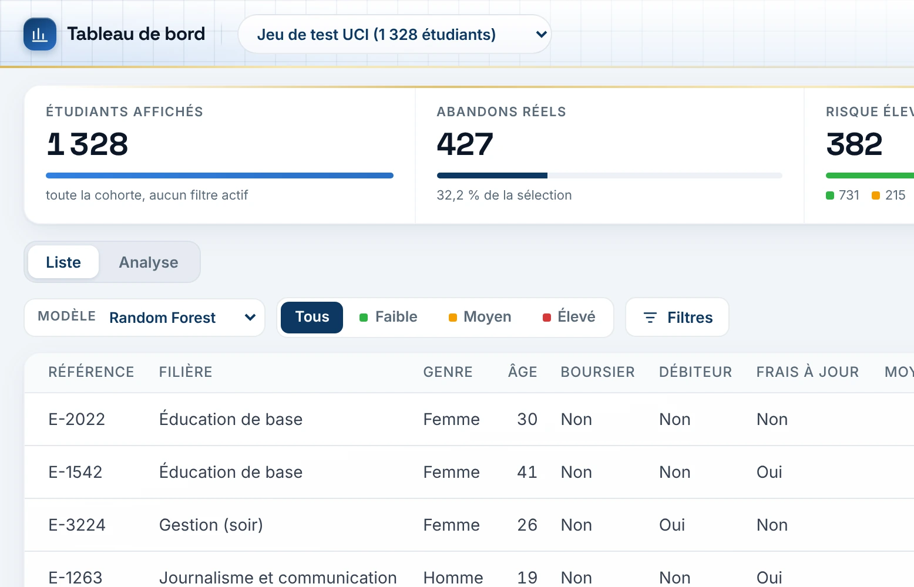

01 · MACHINE LEARNING · PROJET DE FIN D'ÉTUDES
Alerte précoce : prédire l'abandon universitaire
Une méthode à noyau (Nadaraya-Watson) confrontée à la régression logistique, Random Forest et XGBoost, puis déployée en application web pour les conseillers.
0,934AUC
88,6 %accuracy
4 424étudiants
PythonXGBoostSHAPFlaskSQLite